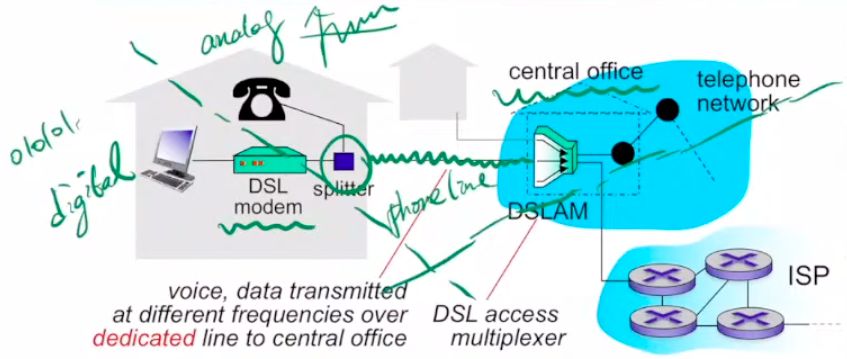
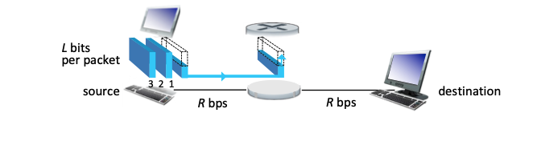
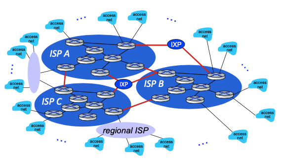
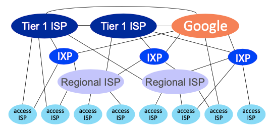
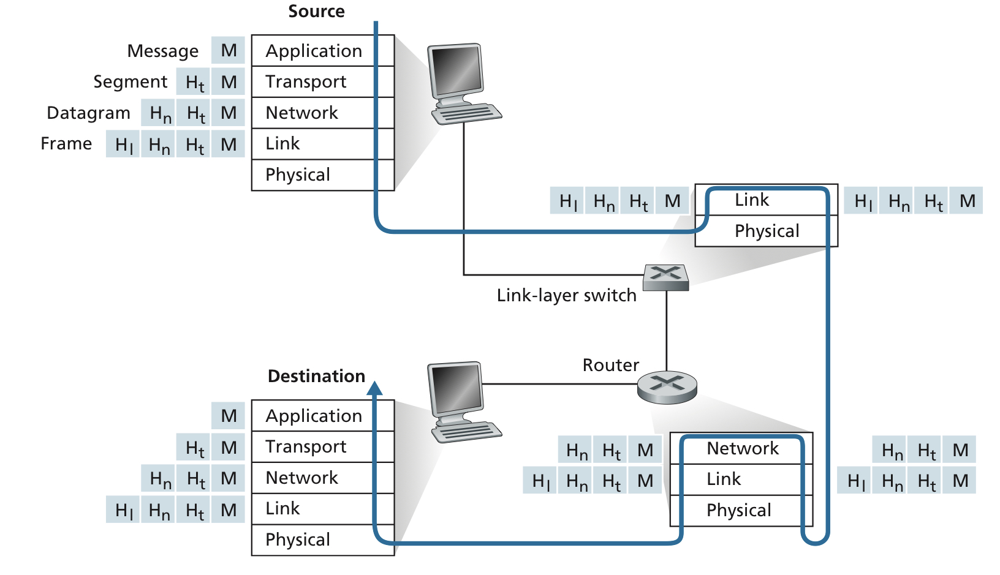

Chpater 1 Computer Networks and the Internet
1.1 What Is the Internet?
網路簡單來說就是大家在交換資料，而想要交換資料的人稱為Network Edge，例如：電腦、伺服器，而協助資料傳來傳去的硬體、軟體、設定則稱為Network Core。
其他常聽到的名詞
Internet Service Provider：提供網路服務的公司
Internet Standards：因為大家要送資料，所以要統一格式
IETF:Internet Engineering Task Force，幫忙統一格式的組織
RFCs:訂定網路格式的文件
1.2 The Network Edge
Edge之中最重要的就是家中網路，以下有幾種家裡可以收到網路的方法
在這之前先介紹一些名詞
Splitter: 在家的裡面，把一條線上的訊號分給電話和網路
（把數位和類比分開）DSL modem: 讓你可以上網的小烏龜
CO(local central offic)
DSLAM：在CO裡面分開數位訊號和類比訊號
(digital subscriber line access multiplexer)
DSL(digital subscriber line)
簡單來說就是把電話線的一部份拿來傳送網路，而因此有一些特性
一家人有獨立一條（不然講電話隔壁也聽的到內容）
因應資料量不同用不同的頻率，資料量越大頻率越高
資料量排名：電話(0 - 4 kHz) < 上傳(4 - 50 KHz) < 下載(50 KHz - 1MHz)
ADSL實際上很慢，因此實際在台灣運作的是VDSL，也就是用兩條電話線一起來傳資料。 
Cable Internet Access
簡單來說就是用電視業者傳送電視影像的線，送網路給大家，也因為電視的特性，在一個區域內的住戶，在某一段的時候會共用一條線（因為電視同一台畫面都一樣）
以下是一些補充
HFC(Hybrid fiber coax):光纖同軸電纜，cable用的線
CMTS(cable modem termination system):把上傳和下載分開
FTTH(fiber to the home)
年輕人的新玩具，就拉一條光纖網路線沒在跟你五四三
企業網路
企業網路跟家中網路不同，不需要透過電話線之類的，可以直接跟ISP申請專用網路，當然有時候不會只有一條線路（避免發生什麼意外被攻破）。
資料要從Edge送到另一個Edge需要媒介，可以分為固體的和無線的，補充在下面。
1.3 The Network Core
最重要的兩個功能：
Routing : 決定資料該走什麼路線抵達終點
Forwarding：就是在資料轉換(switching)
而在網路傳輸時，為什麼需要被封裝呢？Q3.
送封包的方式
packet switching
是目前網路上真的使用的方法，想像兩個host中間有一個router，一個封包「完整的」的抵達Router之後，封包才會「開始」往下一個地點出發。
其中還有一個機制Queueing
也就是每個Router裡面都有容量限制，封包在Router裡面就像在排隊，因此就做queue（從Router裡面準備被送出去的封包)
而傳輸速率，因為要等一個封包完整的傳送完成，假如總資料有L大小，傳送的速度是R，每當有一個中繼站的時候，就會多出L/R的時間，而這樣的送法叫做store-and-forward.

circuit switching
可以想像成，在sender和receiver之間建立了一個通道，這個通道就是你們佔有的，因此資料傳輸的時間就是封包大小/傳輸速率，不會有中繼站變慢的問題。
而一條網路線上，可以讓多個使用者都開通道，那要怎麼分配一條網路線的資源有兩種方法
FDM(Frequency Division Multiplexing)
TDM(Time Division Multiplexing)
Packet Switching v.s. Circuit Switching
| Packet Switching | Circuit Switching |
|---|---|
| better sharing of transmission capacity | less delay |
| efficient and less costly | |
| more user in a time |
其中要所謂more user怎麼計算，可以參考Q6
Network of Network
在前面有提到ISP是提供網路的業者，那ISP有哪些分類？這就要從幾個假設開始說起。
而以下的假設要從讓「全球的使用者」都有網路可以互通
Network Structure 1
只有一個Global ISP，提供服務
Network Structure 2
假設Structure 1 的ISP可以賺錢，那自然會有其他公司也想做Global ISP，因此會有多家業者一起做Global ISP是正常的
為了讓全球使用者互通，ISP之間互相溝通是必須的
Network Structure 3
在現實，有些小地方可能沒有網路連接，因此有地方業者（Regional ISP）去建立網路，並且向Global ISP(T1 ISP)溝通。
當然，更實際的情況是Regional ISP 有大有小，這樣的現象稱為multi-tier hierarchy。
Network Structure 4
由於出現了多重結構，假如網路傳輸都要一層一層傳送到T1 ISP，那全球網路會超級慢，因此下了以下的機制協助上下左右溝通更快
IXP:讓Global ISP互相交換資料的東西(Internet exchange point)
Peering link: 讓其中一些Router可以跟其他人連接
PoP(points of presence) is simply a group of one or more routers (at the same location) in the provider』s network where customer ISPs can connect into the provider ISP. 
Network Structure 5
考量到有些提供大量網路服務資料的公司，他們自己會跟ISP建立一個屬於自己的網路e.g. Google

1.4 Delay, Loss, and Throughput in Packet-Switched Networks
Types of Delay
Nodal Processing Delay <<<<<<< HEAD
你家Router在幫你檢查錯誤之類的花費的時間
Queuing Delay
在Router裡面排隊的時間
Transmission delay
$\dfrac{L}{R}$，L是資料量，R是傳輸資料的速度，這個Delay源自於一次不能送這麼多
Propagation Delay 實體介質造成的延遲。例如送資料到月球，那你送到的時間點最快也比光速還慢，儘管資料可能送的不多。
End-to-end Delay
$d_{\text{end-end}} = N(d_{proc} + d_{trans} + d_{prop})$
想要真實的感受一下delay的話，可以用traceroute來看看你的封包在某幾個Router卡了多久。
Delay的題目練習：Q4,Q5
Loss
資料遺失是怎麼發生的呢？當你的buffer(router裡面排隊的容量)滿了，那送過去的封包Router會直接丟掉。
Throughput(吞吐量)
每個bit從sender到receiver的速率，很好想像的是，要思考throughput時，會考慮整個傳送路徑裡面最慢的地方。
當然也可以討論瞬時吞吐量(instantaneous)還有平均吞吐量(average)
1.5 Protocol Layers and Their Service Models
什麼是Protocol?
一個Protocol幫忙制訂「訊息傳送」的規則，包含了傳送還有接收
例如：http,制訂你平常上網的時候怎麼接收網頁的資料，伺服器傳送什麼給你
Five-layer Internet protocol stack (top-down)
由於網路的重點是送資料，但這其中涉及硬體、路由器、軟體等等，因此要設計各種不同層級的Protocal來跟各個不同的地方溝通。一開始有設計七層，但實際五層就夠了：
Application Layer(7)
e.g. HTTP protocol, SMTP, FTP
refer to this packet of information at the application layer as a message
Transport Layer(4)
e.g. TCP, UDP
thinked as segement
Network Layer(3)
e.g. IP
thinked as datagrams
Link Layer(2)
thinked as frames
Physical Layer(1)
以上只是簡單給一點例子，在後面的章節會更詳細說明他們的機制還有功能。
Encapsulation 剛剛有提到每一層的Protocal都是和不同人溝通，因此在傳送的時候，網路的每個位置也會檢查不一樣的Protocal，可以參考下面的圖片意會一下： 
1.6 Networks User Attack
投影片好像沒有，當補充就好
Dos(denial-of-service) attack
Three Clacess
Vulnerability attack
let target host get a 「well-crafted」 messages, the service can stop or host crash
Bandwidth flooding
send lots of file to host
Connection flooding
establish a large number connection
DDos = Distributed DoS
Note: packet sniffer: a passive receiver that records a copy of every packet that files.
1.7 Historu of Computer Networking and the Internet
老師這邊就淺談以前的軍用網路，我們這邊跳過。
連接網路的媒介
固體
Tiwsted-Pair Copper Wire
least expensive, commonly used guided medium
been used by telephone networks.
consists of two insulated copper wires, each about 1 mm thick, arranged in a regular spiral pattern (To reduce electrical interference)
Unshielded Twisted Pair (UTP)
Coaxial Cable
consists of two copper conductors but are concentric
common in cable television systems
shared medium
Fiber Optics
thin, flexible, conduct, pulese of light
prefered long-haul guided transmission media, e.g. overseas links
high cost of opticals devices, e.g. transmitters, receivers, switched
Terrestrial Radio Channels
in electromagnetic spectrum
Satellite Radio Channels
geostation satellites
low-earth orbiting (LEO) satellites (closer to earth)